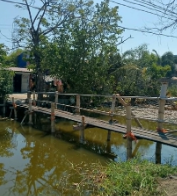
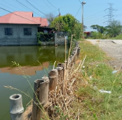
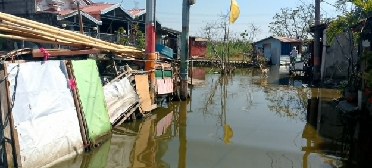

ROGER LOPEZ
Mula pa noong aking kabataan, hindi na bago ang pagbaha tuwing tag-ulan sa Sitio Batasan. Bilang catch basin ng Colgante, ito ang isa sa pinakamapanganib na lugar, kung saan ang dating mga palayan ay tila naging palaisdaan. Sa kabila ng paulit-ulit na sakuna, natututo na ang mga residente na maghanap ng paraan upang makausad. Mula sa pag-aani ng isdang dala ng baha, pagbili ng bangka at bota, hanggang sa pagpapataas ng mga bahay upang maiwasang mapasukan ng tubig.

Ang patuloy na paglala ng sitwasyon, kung saan kahit bahagyang ulan ay nagdudulot ng pagbaha na tumatagal ng higit tatlong linggo bago humupa ay siyang nagdudulot ng pangamba sa mga mamamayan. Minsan ay umabot sa punto kung saan kinakailangan kong maglikas ng isang buong pamilya gamit ang bangka at makiusap na makisilong sa ibang bahay.

“ Sa kabila ng maraming balakid na aking kinakaharap bilang tanod, ang ngiti at pasasalamat ng mga taong aking natulungan sa komunidad ay nagbibigay saysay sa bawat hirap ng paglilingkod. Ang mga simpleng ‘salamat’ ay nagsisilbing paalala na ang bawat sakripisyo ay may kabuluhan. ”

Naniniwala ako na ang aming barangay ay nagsusumikap na tugunan ang pangangailangan ng mga mamamayan sa abot ng aming makakaya, mula sa pagtatayo ng maliliit na daanan, pagpapatrolya, pangongolekta ng basura, hanggang sa paglilinis ng mga imburnal. Gayunpaman, malinaw na limitado ang saklaw ng aming kapangyarihan at hindi ito sapat upang tugunan ang mas malalaking suliranin katulad ng pagbaha at kaligtasan. Dahil dito, umaasa ako na ang pamahalaang may mas mataas na mandato ay makialam at magpatupad ng mas mabibigat na proyekto gaya ng pagtaas ng mga pangunahing kalsada, pagtatayo ng flood control barriers, at mas sistematikong sentralisasyon ng mga hakbangin. Bago pa maging huli ang lahat, kailangan naming maramdaman na ang aming komunidad ay hindi nakalimutan, at na ang aming serbisyo ay may katuwang na mas matibay na imprastruktura mula sa pamahalaan.